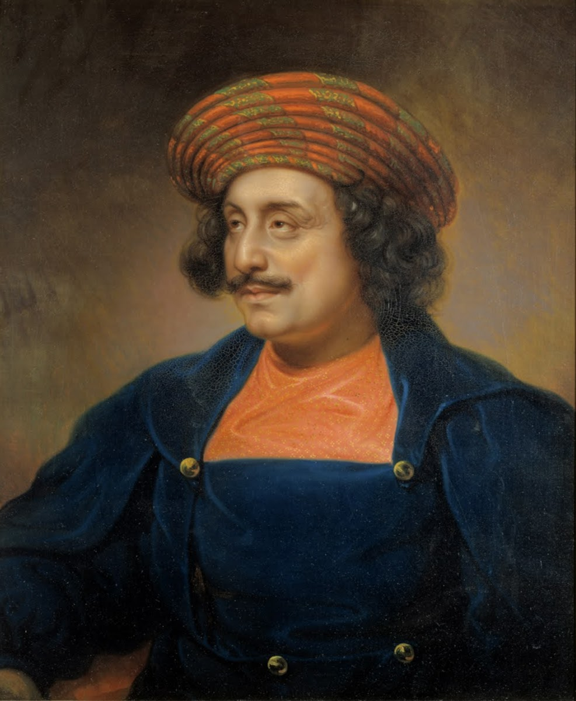

Raja Ram Mohan Roy
22 May 1772 – 27 September 1833
The Father of the Indian Renaissance
Early Life
Born in a Brahmin family in Radhanagar, Bengal, Ram Mohan Roy was a brilliant scholar who mastered several languages including Sanskrit, Persian, Arabic, English, and Bengali. His extensive reading of Hindu scriptures, Islamic texts, and Western philosophy led him to question idolatry and social injustices.
Social Reforms
Roy was deeply troubled by practices like Sati (widow burning), child marriage, and caste discrimination. He campaigned tirelessly against Sati, publishing pamphlets and gathering support from progressive British officials. His efforts culminated in Lord William Bentinck's Bengal Sati Regulation of 1829, which legally banned the practice.
Brahmo Samaj
In 1828, he founded the Brahmo Samaj, a reformist movement that rejected idol worship, advocated for monotheism, and promoted rational thinking. The Samaj became a powerful force for social and religious reform across India.
Education & Press
A strong advocate for modern education, Roy supported the establishment of the Hindu College (now Presidency University) in Calcutta. He also founded several newspapers including the Sambad Kaumudi (Bengali weekly) to spread reformist ideas.
Legacy
Raja Ram Mohan Roy is remembered as the pioneer of India's modern age. He bridged Eastern and Western thought, championed women's rights, and laid the intellectual groundwork for India's social reform movements. His birthday is celebrated as Renaissance Day in West Bengal.